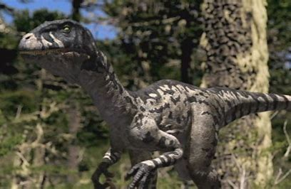
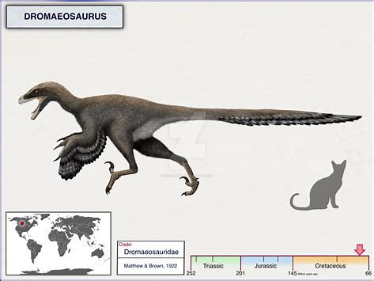
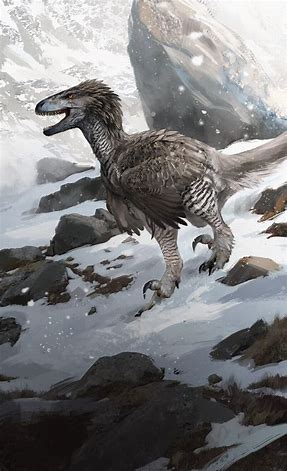
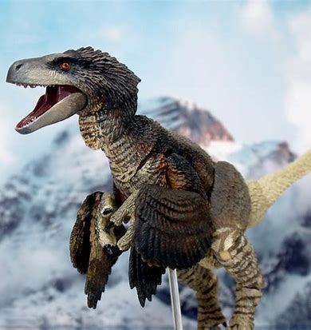

Română
Dromaeosaurus, numit de către William Diller Matthew și Barnum Brown în 1922, este o șopârlă rapidă, care se regăsea predominant în Alberta, Canada și Montana, Statele Unite ale Americii. Acesta este un dinozaur de tip carnivor, având o lungime estimativă de 1.8 metri și trăia în perioada Campaniană din Cretacic. S-au găsit multe exemplare de-a lungul timpului.
English
Dromaeosaurus, named by William Diller Matthew and Barnum Brown in 1922, is a fast-paced lizard that was predominantly found in Alberta, Canada and Montana, United States. This is a carnivorous dinosaur, with an estimated length of 1.8 meters and lived in the Campanian period of the Cretaceous. Many copies have been found over time.